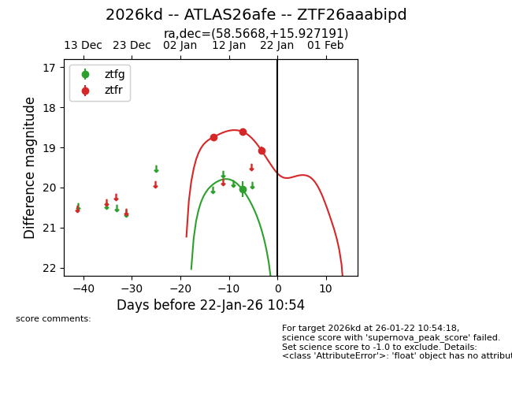
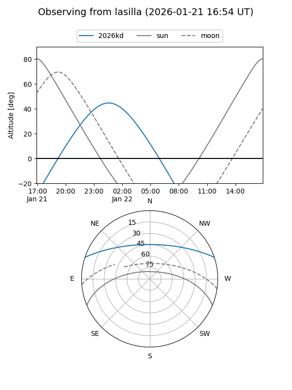
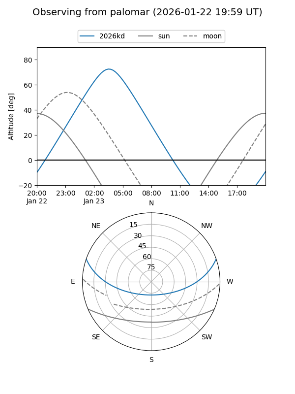
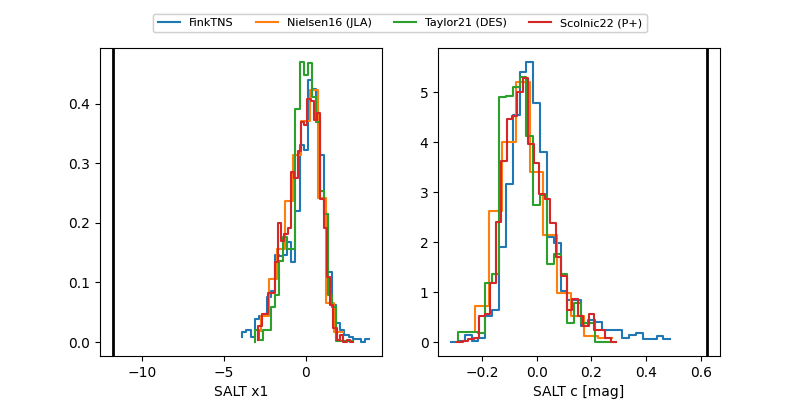

2026kd
Target 2026kd at 2026-01-28 06:06
Aliases and brokers:
FINK: link
Lasair: link
ALeRCE: link
TNS: link
YSE: link
alt names
ZTF26aaabipd (ztf,fink_ztf)
2026kd (tns,yse)
ATLAS26afe (atlas)
Coordinates:
equatorial (ra, dec) = 58.5668,+15.92719
equatorial (HMS+DMS) = 03:54:16.03,+15:55:37.89
galactic (l, b) = (174.2831,-28.19749)
Flags:
likely cv
Photometry:
last ztfg=20.04, ztfr=19.07
1 ztfg, 3 ztfr detections
Lightcurve

Visibility


Additional plots
